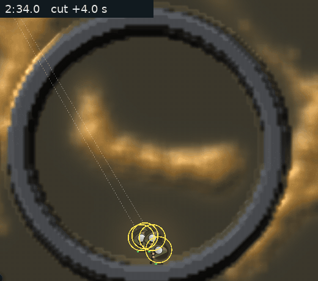

<title>Starving Mould on Screen</title>
<meta name="claude:viewport-fit-sides" content="cover">
<link rel="preconnect" href="https://fonts.googleapis.com">
<link rel="stylesheet" href="https://fonts.googleapis.com/css2?family=Inter:wght@400;600&family=Space+Grotesk:wght@500;700&display=swap">
<style>
/* Plan C8 (2026-11-14, the graphics thread): panic and withering drawn from
   each walker's news of food. Same style as the Scared Mould page, whose
   scenes it re-films: mould amber, crystal cyan, the bolt's red. Labelled,
   not blind: it shows a feature on and off, not a pick between looks. */
:root {
  --bg: #f3f5f6; --fg: #182024; --muted: #56646b; --line: #d5dde0;
  --panel: #ffffff; --amber: #a86a12; --cyan: #127a93; --red: #b2402a; --ash: #6f6a64;
  --display: "Space Grotesk", "Segoe UI", system-ui, sans-serif;
  --body: "Inter", "Segoe UI", system-ui, sans-serif;
}
@media (prefers-color-scheme: dark) { :root:not([data-theme="light"]) {
  --bg: #0b1114; --fg: #e3eaec; --muted: #93a3aa; --line: #22303a;
  --panel: #111a1f; --amber: #e2a95a; --cyan: #8cebff; --red: #f08a72; --ash: #b3aca4; color-scheme: dark } }
:root[data-theme="dark"] {
  --bg: #0b1114; --fg: #e3eaec; --muted: #93a3aa; --line: #22303a;
  --panel: #111a1f; --amber: #e2a95a; --cyan: #8cebff; --red: #f08a72; --ash: #b3aca4; color-scheme: dark }
body { background: var(--bg); color: var(--fg); font-family: var(--body); line-height: 1.55;
  padding-left: max(16px, env(safe-area-inset-left, 0px)); padding-right: max(16px, env(safe-area-inset-right, 0px)); padding-block: 28px 48px; }
main { max-width: 1180px; margin: 0 auto; display: grid; gap: 34px; }
h1, h2 { font-family: var(--display); text-wrap: balance; margin: 0; }
h1 { font-size: 1.9rem; }
h2 { font-size: 1.2rem; }
p { margin: 0; max-width: 68ch; }
.lede { color: var(--muted); }
header, section { display: grid; gap: 12px; }
.hero { display: grid; grid-template-columns: minmax(0, 520px) minmax(0, 1fr); gap: 24px; align-items: start; }
@media (max-width: 760px) { .hero { grid-template-columns: 1fr; } }
.pair { display: grid; grid-template-columns: repeat(auto-fit, minmax(280px, 1fr)); gap: 20px; }
figure { margin: 0; display: grid; gap: 8px; min-width: 0; align-content: start; }
figure img, figure video { width: 100%; max-width: 100%; border-radius: 4px; border: 1px solid var(--line); display: block; background: #111a1f; }
.stand video { aspect-ratio: 520 / 460; }
.bolt video { aspect-ratio: 560 / 430; }
figcaption { font-size: 0.9rem; color: var(--muted); }
.tag { font-family: var(--display); font-size: 0.85rem; letter-spacing: 0.06em; text-transform: uppercase; color: var(--amber); }
.tag.on { color: var(--red); }
.key { display: grid; gap: 8px; margin: 0; padding: 0; list-style: none; }
.key li { display: grid; grid-template-columns: 18px 1fr; gap: 10px; align-items: start; }
.sw { width: 14px; height: 14px; border-radius: 3px; margin-top: 4px; border: 1px solid var(--line); }
.scroll { overflow-x: auto; min-width: 0; }
table { border-collapse: collapse; font-variant-numeric: tabular-nums; font-size: 0.9rem; min-width: 300px; }
th, td { text-align: right; padding: 5px 12px 5px 0; border-bottom: 1px solid var(--line); }
th:first-child, td:first-child { text-align: left; }
th { font-family: var(--display); font-weight: 500; color: var(--muted); font-size: 0.78rem; letter-spacing: 0.04em; text-transform: uppercase; }
.note { color: var(--muted); font-size: 0.9rem; }
code { font-size: 0.9em; }
</style>

<main>
  <header>
    <span class="tag">Shape C · cut off from food</span>
    <h1>You can now see a piece starve</h1>
    <p class="lede">Withering and panic were in the game, but the screen didn't show them: a cut-off piece looked like any other until it fell apart. Now the picture comes from each walker's news of food, the same number the simulation uses to decide who withers and who panics. Nothing is painted on top.</p>
  </header>

  <section class="hero">
    <figure>
      
      <figcaption>The last stand, at half speed, 2:34 to 2:39 (cut at 2:30). Walkers inside the ring: 195 at +5 s, 109 at +7 s, 18 at +9 s.</figcaption>
    </figure>
    <div style="display:grid; gap:14px; min-width:0">
      <h2>What you see</h2>
      <ul class="key">
        <li><span class="sw" style="background:#786f68"></span><span><b>Ashen mould.</b> Each cell fades towards grey by the share of nearby walkers that have heard no news of food for 5 s (the wither lag). A fed piece keeps its colour. A starving piece greys as its walkers go stale, and thins as they wither.</span></li>
        <li><span class="sw" style="background:#ffb228"></span><span><b>Amber specks.</b> A cut-off walker in the first 1.5 s past the lag, while it leans: it creeps at half pace towards its target. This is the warning.</span></li>
        <li><span class="sw" style="background:#eb3428"></span><span><b>Red specks.</b> A cut-off walker past the lean, bolting at twice its pace.</span></li>
      </ul>
      <p class="note">Calm walkers stay one pixel. Cut-off specks grow with the zoom, 2 × 2 pixels at zoom 6 and up to 4 × 4, because a single pixel of 195 walkers didn't read on the first film.</p>
    </div>
  </section>

  <section class="stand">
    <h2>The last stand, on and off</h2>
    <p>A ring cut at 2:30 holds a piece with four soldiers. Both films are the same simulation: the walker counts match to the walker on every second, and only the drawing differs. Frames every 0.5 s, played at 6 a second.</p>
    <div class="pair">
      <figure>
        <span class="tag">Before (main)</span>
        <video src="stand-off.mp4" poster="stand.jpg" controls muted loop playsinline preload="metadata"></video>
      </figure>
      <figure>
        <span class="tag on">News of food shown</span>
        <video src="stand.mp4" poster="stand.jpg" controls muted loop playsinline preload="metadata"></video>
      </figure>
    </div>
    <div class="scroll">
      <table>
        <thead><tr><th>Seconds after the cut</th><th>0</th><th>2</th><th>4</th><th>6</th><th>7</th><th>8</th><th>9</th><th>10</th><th>14</th></tr></thead>
        <tbody><tr><td>Walkers inside the ring</td><td>184</td><td>195</td><td>195</td><td>195</td><td>109</td><td>45</td><td>18</td><td>10</td><td>0</td></tr></tbody>
      </table>
    </div>
  </section>

  <section class="bolt">
    <h2>A piece the cut doesn't starve stays its colour</h2>
    <p>This is the bolt scene from the Scared Mould page: a smaller ring cut at 2:30 that opens at 2:38. Here the piece never goes grey and no specks turn amber, because its walkers' news stays fresh. It keeps 219 to 265 walkers through 2:57, so nothing in it withers either. The screen shows what the simulation is doing.</p>
    <figure style="max-width:560px">
      <video src="bolt.mp4" poster="bolt.jpg" controls muted loop playsinline preload="metadata"></video>
    </figure>
  </section>

  <section>
    <h2>Cost</h2>
    <p>On software Vulkan (llvmpipe), with 20 game seconds of the farm hand, the median frame was 30.4 and 31.6 ms without this, and 31.2 and 31.9 ms with it. That's within run-to-run noise. Each walker does one extra read and an atomic count. The 1070 timing is waiting for the PC.</p>
    <p class="note">Films: <code>larder-world look=DIR hand=farm seed=1 map=fork cut=150,365,240,32 cutsquad=365,264,150,4 centre=365,238,6</code> and <code>cut=150,386,239,22,8,16 centre=386,232,5</code>, on llvmpipe, 2026-11-14. Logs and scripts in <code>Reports/panic-look-2026-11-14/raw/</code>.</p>
  </section>
</main>
